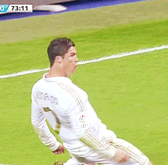

크리스티아누 호날두 두스산투스 아베이루
국적 : 포르투갈
출생 : 1985년 2월 5일 (36세), 포르투갈 마데이라 제도 푼샬
신체 : 187.5cm / 84.9kg
포지션 : 공격수
팀기록
스포르팅 CP (2002~2003)
수페르타사 칸디두 드 올리베이라: 2002
맨체스터 유나이티드 FC (2003~2009, 2021~ )
프리미어 리그: 2006-07, 2007-08, 2008-09
FA컵: 2003-04
풋볼 리그컵: 2005-06, 2008-09
FA 커뮤니티 실드: 2007, 2008
FIFA 클럽 월드컵: 2008
UEFA 챔피언스 리그: 2007-08
레알 마드리드 CF (2009~2018)
라리가: 2011-12, 2016-17
코파 델 레이: 2010-11, 2013-14
수페르코파 데 에스파냐: 2012, 2017
UEFA 챔피언스 리그: 2013-14, 2015-16, 2016-17, 2017-18
UEFA 슈퍼컵: 2014, 2016, 2017
FIFA 클럽 월드컵: 2014, 2016, 2017
유벤투스 FC (2018~2021)
세리에 A: 2018-19, 2019-20
코파 이탈리아: 2020-21
수페르코파 이탈리아나: 2018, 2020
포르투갈 축구 국가대표팀
UEFA 유러피언 챔피언십: 2016
UEFA 네이션스 리그: 2018-19
개인수상
발롱도르: 2008, 2013, 2014, 2016, 2017
발롱도르 드림팀: 2020
FIFA 올해의 선수: 2008, 2013, 2014, 2016, 2017
FIFA 푸스카스상: 2009
UEFA 올해의 선수: 2013-14, 2015-16, 2016-17
UEFA 올해의 클럽 축구 선수: 2007-08
UEFA 올해의 공격수: 2007-08, 2016-17, 2017-18
유러피언 골든슈: 2007-08, 2010-11, 2013-14, 2014-15
FIFA FIFPro 월드 XI: 2007, 2008, 2009, 2010, 2011, 2012, 2013, 2014, 2015, 2016, 2017, 2018, 2019, 2020
UEFA 챔피언스 리그 득점왕: 2007-08, 2012-13, 2013-14, 2014-15, 2015-16, 2016-17, 2017-18
UEFA 챔피언스 리그 도움왕: 2013-14
FIFPro 올해의 선수: 2008
FIFPro 올해의 스페셜 영플레이어: 2003-04, 2004-05
프리미어 리그 득점왕: 2007-08
라리가 최우수 선수: 2013-14
라리가 MVP[9]: 2012-13
라리가 최우수 공격수: 2013-14
라리가 득점왕: 2010-11, 2013-14, 2014-15
라리가 올해의 골: 2013-14
라리가 올해의 팀: 2013-14, 2014-15, 2015-16
코파 델 레이 득점왕: 2010-11
세리에 A 올해의 선수: 2018-19, 2019-20
세리에 A MVP: 2018-19
세리에 A 최우수 공격수: 2020-21
세리에 A 득점왕: 2020-21
아스 역대 베스트 XI: 2021
개인기록
국가대표
포르투갈 역대 최고의 축구 선수: 2015
포르투갈 올해의 선수 최다 수상: 10회(2007, 2008, 2009, 2011, 2012, 2013, 2015, 2016, 2017, 2018)
A매치 최다 출전: 182경기 (2021.10.13 기준)
A매치 최다 득점: 115골 (2021.10.13 기준)
유럽기록
UEFA 챔피언스 리그 최다 득점: 140골
UEFA 챔피언스 리그 최다 도움: 44도움
UEFA 챔피언스 리그 최다 출전 1위: 179경기
UEFA 챔피언스 리그 최다 득점왕: 7회
UEFA 챔피언스 리그 최다 연속 득점왕: 6회(2012-13 ~ 2017-18)
UEFA 챔피언스 리그 해트트릭 횟수 1위: 8회
UEFA 챔피언스 리그 한 시즌 최다 공격 포인트: 22P (2013-14: 17골 5도움)
UEFA 챔피언스 리그 한 시즌 최다 득점: 17골(2013-14)
UEFA 챔피언스 리그 최다 연속 경기 득점: 11경기
UEFA 챔피언스 리그에서 세 시즌 동안 15득점 이상을 기록한 유일한 선수: 2013-14, 2015-16, 2017-18
UEFA 챔피언스 리그에서 한 시즌 3번의 해트트릭을 달성한 유일한 선수: 2015-16
UEFA 올해의 팀 최다 선정: 13회(2004, 2007 ~ 2018)
UEFA 올해의 팀 최다 연속 선정: 12회(2007 ~ 2018)
UEFA 올해의 팀에 두 개의 포지션으로 선정된 유일한 선수: 미드필더(2004, 2007 ~ 2010), 공격수(2011 ~ 2017)
UEFA 올해의 선수 최다 수상: 4회(2008, 14, 16, 17)
UEFA 올해의 선수를 연속 수상한 유일한 선수: 2015-16, 2016-17
세계 기록
발롱도르 최다 포디움 2위: 12회(2007, 2008, 2009, 2011, 2012, 2013, 2014, 2015, 2016, 2017, 2018, 2019)
FIFA A매치 국가대항전 통산 최다 득점: 115골
FIFA A매치 국가대항전 통산 최다 출장 3위: 182경기
FIFA A매치 국가대항전 통산 최다 해트트릭: 10회
FIFA FIFPro 월드 XI 최다 선정: 14회
FIFA FIFPro 월드 XI 최다 연속 선정: 14회
2개 포지션에서 FIFA FIFPro 월드 XI를 수상한 유일한 선수
2개의 클럽에서 FIFA FIFPro 월드 XI에 선정된 최초의 선수
FIFA 클럽 월드컵 통산 최다 득점: 7골
역대 최고 이적료: 2009-2013
월드 사커 올해의 선수 최다 수상: 5회(2008, 2013, 2014, 2016, 2017)
연간 국제 대회 최다 득점 1위: 32골(2017)
PL, 라리가, 세리에, UEFA 챔피언스 리그, UEFA 유로 이 모든 대회에서 득점왕을 차지한 최초이자 유일한 선수
두 개의 클럽(맨체스터 유나이티드와 레알 마드리드)에서 각각 리그, 국내 컵, 국내 슈퍼컵, 챔피언스 리그, 클럽 월드컵 우승을 이끌어내고, 리그 MVP, 리그 득점왕, 리그 베스트, 유러피언 골든슈, 발롱도르를 모두 수상한 유일한 선수
세 개의 클럽(맨체스터 유나이티드와 레알 마드리드와 유벤투스 FC)에서 각각 리그, 국내 컵, 국내 슈퍼컵 우승을 이끌어내고, 리그 MVP, 리그 득점왕, 리그 베스트를 모두 수상한 유일한 선수
세 개의 클럽(맨체스터 유나이티드와 레알 마드리드와 유벤투스 FC)에서 모두 100골 이상을 넣은 유일한 선수
11개의 연속된 성인 대표팀 대회에서 전부 득점에 성공한 유일한 선수
다섯 번의 UEFA 유로(2004, 2008, 2012, 2016, 2020)와 네 번의 월드컵(2006, 2010, 2014, 2018)에서 득점한 유일한 선수
UEFA 챔피언스 리그 통산 100골을 기록한 최초의 선수
유럽 클럽 대항전 통산 100골을 기록한 최초의 선수
공식전에서 매 분마다 득점을 기록한 유이한 선수
4시즌 연속 60골을 기록한 유일한 선수
8시즌 연속 50골을 기록한 최초의 선수
8시즌 연속 40골을 기록한 최초의 선수
9시즌 연속 30골을 기록한 최초의 선수
15년 연속 30골 이상 기록한 유일한 선수
축구 역사상 최다 승을 거둔 선수 (713번)
축구 역사상 최다 득점자[801골]
라리가
라리가 역대 최다 득점 2위: 311득점
라리가 역대 단일 시즌 최다골 2위: 48득점
라리가 최단 기간 150득점: 140경기
라리가 최단 기간 200득점: 178경기
라리가 최단 기간 300득점: 286경기
라리가 여섯 시즌 연속 30득점 이상 달성한 유일한 선수: 2010-11~2015-16
라리가 한 시즌 최다 경기 득점: 27경기(2012-13)
라리가 한 시즌 최다 상대팀 득점: 19팀(2012-13)
라리가 한 시즌 최다 해트트릭: 8회(2014-15)
라리가 한 시즌 전 팀 상대로 득점한 최초의 선수(2011-12)
엘 클라시코 최다 경기 연속 득점: 6경기
캄 노우 원정 최다 득점자: 13골 (2020.12.9 기준)
추가 정보